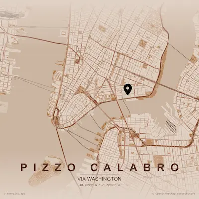
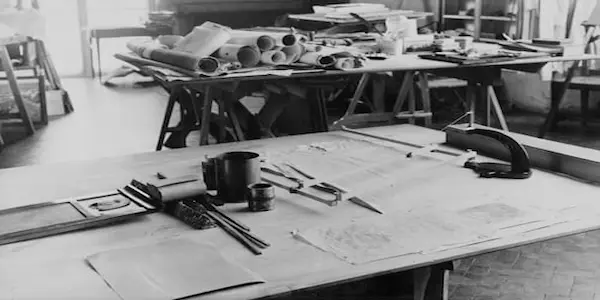
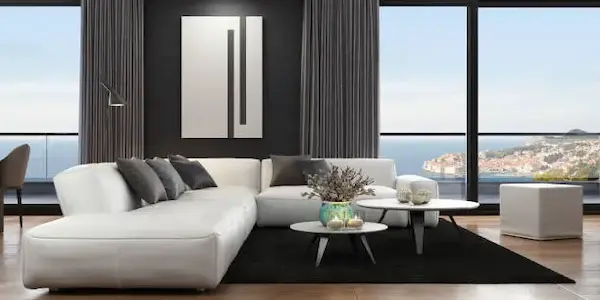
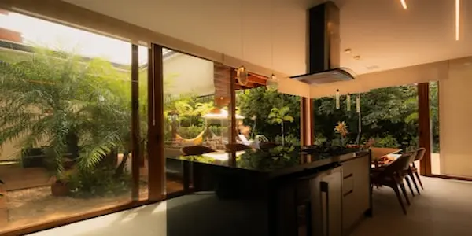
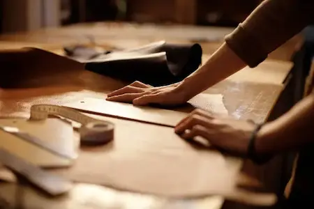
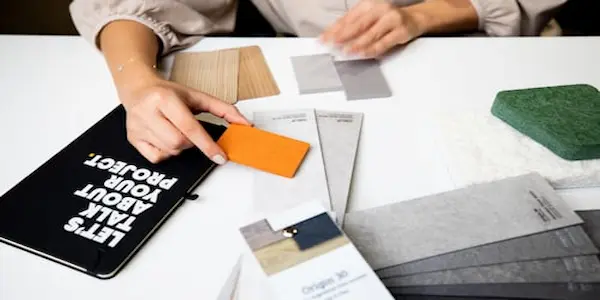
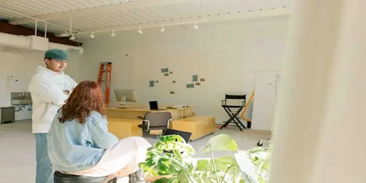

Artigianato che abita il tempo
Siamo Room-ati: uno studio di interior design fondato a Pizzo Calabro con una convinzione semplice — che ogni ambiente racconti chi lo abita. Da quasi cinquant'anni affianchiamo privati e aziende nella progettazione di spazi che uniscono la tradizione artigianale italiana alla sensibilità contemporanea. Il nostro lavoro non inizia con un progetto su carta, ma con una conversazione.

Dove siamoLa nostra storia

1978La fondazione
Marco e Giulia Ferretti aprono il primo atelier in Via Nazionale, Pizzo Calabro. L'idea è radicale per l'epoca: non vendere mobili, ma progettare ambienti completi, scegliendo ogni elemento — dal pavimento alle maniglie — come parte di un unico racconto estetico.

1985Il primo showroom
Con la crescita della clientela privata nasce lo showroom di Brera: 400 mq in cui i clienti possono toccare, vivere e immaginare. Non un negozio, ma un appartamento abitabile. Ogni stanza è un progetto reale, visitabile su appuntamento.

1993Riconoscimento internazionale
Al Salone del Mobile di Milano, Room-ati riceve il premio Abitare Bene per il progetto Villa Carminati, una residenza privata sul Lago di Como. È il momento in cui lo studio esce dai confini nazionali e inizia a ricevere commissioni da Parigi, Zurigo e Londra.

2004Nuovi laboratori
Viene inaugurato il laboratorio artigianale di Seregno: 1.200 mq dove falegnami, tappezzieri e restauratori lavorano fianco a fianco con i progettisti. La produzione interna diventa il cuore del metodo Room-ati — nessun intermediario tra il disegno e l'oggetto finito. .

2015Linea sostenibile
Nasce Renew, il servizio dedicato al restauro e alla reinterpretazione di ambienti esistenti. L'intuizione è che il lusso più autentico non sia il nuovo, ma il valorizzare ciò che già esiste. Renew ridà vita a interni storici, mobili di famiglia, dimore d'epoca.

2024Oggi
Room-ati conta 34 collaboratori tra progettisti, artigiani e consulenti. Ogni anno seguiamo non più di 20 progetti, per garantire la presenza personale dei fondatori su ogni cantiere. La lista d'attesa è parte del nostro metodo: il tempo è il primo materiale con cui lavoriamo. .